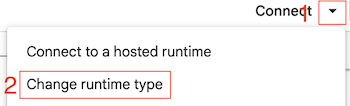
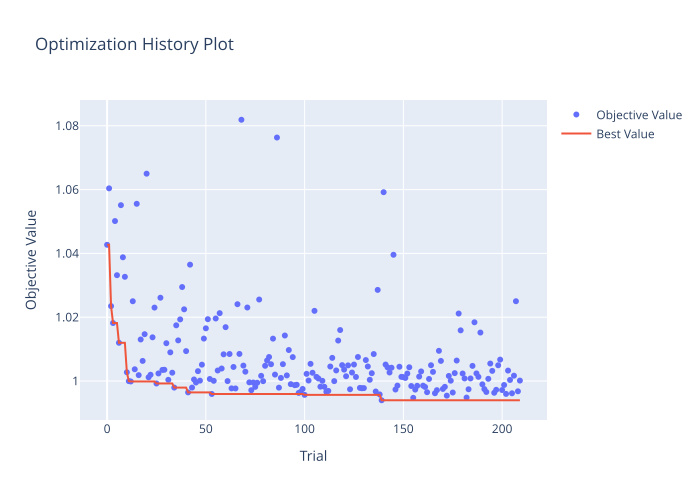
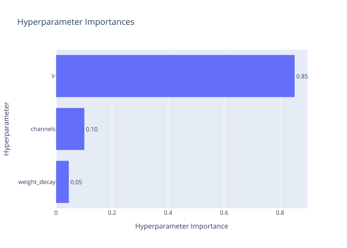
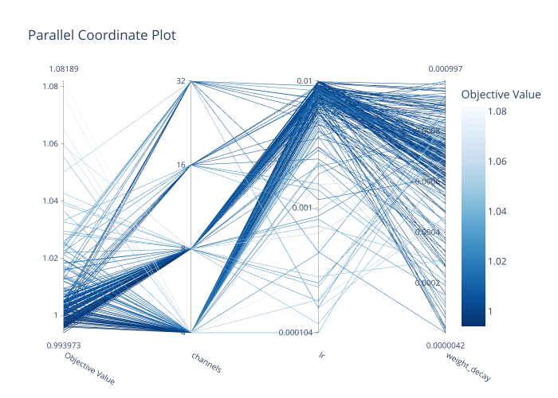
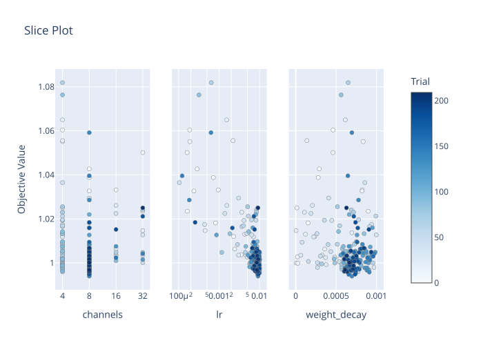

Hyperparameter Tuning with Optuna#

Note: this notebook requires a GPU. Please switch to T4 GPU using the drop down menu in the top right of the colab interface:

Tune learning rate, weight decay, and channels on a toy training loop#
Install and import dependencies#
# Dependency management
import sys, subprocess
for p in ['optuna', 'plotly', 'scikit-learn', 'torch']:
try:
__import__(p if p != 'scikit-learn' else 'sklearn')
except Exception:
subprocess.check_call([sys.executable, '-m', 'pip', 'install', p, '-q'])
from pathlib import Path
import torch, torch.nn as nn, torch.optim as optim
import optuna
import plotly.io as pio
# fix random seeds for reproducibility
torch.random.manual_seed(0)
# set device
device = "cuda" if torch.cuda.is_available() else "cpu"
device = "mps" if torch.backends.mps.is_available() else device ## Mac OS metal
print(f"Using device: {device}")
# set plotly to render SVGs for display in the Jupyter book
if 'svg' in pio.renderers:
pio.renderers.default = "svg"
Using device: mps
Data Model and Loss function#
We define some toy data, a simple model and loss function. Which we can then optimize.
# Data
X = torch.randn(64,1,16,16)
y = torch.randn(64,1,16,16)
# Model
class Tiny(nn.Module):
def __init__(self, ch=8):
super().__init__()
self.net = nn.Sequential(nn.Conv2d(1,ch,3,padding=1), nn.ReLU(), nn.Conv2d(ch,1,3,padding=1))
def forward(self,x): return self.net(x)
# Loss
criterion = nn.MSELoss()
Define the objective function#
We define an objective function. Optuna will optimize its return value. The function takes a trial object as input, which is used to suggest hyperparameters. In this example, we will tune the learning rate, weight decay, and number of channels in a simple neural network.
def objective(trial):
lr = trial.suggest_float('lr', 1e-4, 1e-2, log=True)
wd = trial.suggest_float('weight_decay', 0.0, 1e-3)
ch = trial.suggest_categorical('channels', [4,8,16,32])
model = Tiny(ch)
opt = optim.Adam(model.parameters(), lr=lr, weight_decay=wd)
for _ in range(10):
opt.zero_grad(); loss = criterion(model(X), y); loss.backward(); opt.step()
return float(loss)
Create a study#
Here we create a study object, which will manage the optimization process. We specify that we want to minimize the objective function.
By saving the study to a SQLite database, we can easily resume the optimization process later if needed. Thereby, we can add more trials without losing previous results, which means our new trials will be run with hyperparameters closer to the optimum.
By setting the direction to “minimize”, we indicate that we want to find the hyperparameters that result in the lowest value of the objective function.
study_name = "tiny_optuna_study"
db_path = Path('data') / f"{study_name}.db"
db_path.parent.mkdir(parents=True, exist_ok=True)
study = optuna.create_study(
direction="minimize", study_name=study_name, storage=f"sqlite:///{db_path}", load_if_exists=True
)
[I 2025-09-18 16:57:55,138] Using an existing study with name 'tiny_optuna_study' instead of creating a new one.
Optimize the study#
This will run the optimization process for a specified number of trials. Each trial will call the objective function with different hyperparameters suggested by Optuna.
Optuna will keep track of the results and will choose hyperparameters close to the best hyperparameters found so far. Thereby, we do a form of gradient descent in hyperparameter space.
study.optimize(objective, n_trials=30)
print('Best:', study.best_params)
/var/folders/8s/7jr95f1d28vflnwm1cfqv7t40000gr/T/ipykernel_16346/1785795861.py:9: UserWarning:
Converting a tensor with requires_grad=True to a scalar may lead to unexpected behavior.
Consider using tensor.detach() first. (Triggered internally at /Users/runner/work/pytorch/pytorch/pytorch/torch/csrc/autograd/generated/python_variable_methods.cpp:836.)
[I 2025-09-18 16:57:55,661] Trial 180 finished with value: 1.0023503303527832 and parameters: {'lr': 0.006057775760858208, 'weight_decay': 0.000751040066148466, 'channels': 8}. Best is trial 139 with value: 0.9939734935760498.
[I 2025-09-18 16:57:55,726] Trial 181 finished with value: 1.0007994174957275 and parameters: {'lr': 0.009059817748544932, 'weight_decay': 0.0006961055183184683, 'channels': 8}. Best is trial 139 with value: 0.9939734935760498.
[I 2025-09-18 16:57:55,790] Trial 182 finished with value: 0.994810163974762 and parameters: {'lr': 0.00933784340257503, 'weight_decay': 0.0007341604393412627, 'channels': 8}. Best is trial 139 with value: 0.9939734935760498.
[I 2025-09-18 16:57:55,913] Trial 183 finished with value: 0.9974181652069092 and parameters: {'lr': 0.008431960435019892, 'weight_decay': 0.0007323026381810234, 'channels': 8}. Best is trial 139 with value: 0.9939734935760498.
[I 2025-09-18 16:57:55,997] Trial 184 finished with value: 1.0008041858673096 and parameters: {'lr': 0.00908355661482919, 'weight_decay': 0.0007694656585647469, 'channels': 8}. Best is trial 139 with value: 0.9939734935760498.
[I 2025-09-18 16:57:56,064] Trial 185 finished with value: 1.0047383308410645 and parameters: {'lr': 0.007856900915545957, 'weight_decay': 0.0007837760680055667, 'channels': 8}. Best is trial 139 with value: 0.9939734935760498.
[I 2025-09-18 16:57:56,133] Trial 186 finished with value: 1.0184125900268555 and parameters: {'lr': 0.0002557561473822107, 'weight_decay': 0.0007393006565330367, 'channels': 8}. Best is trial 139 with value: 0.9939734935760498.
[I 2025-09-18 16:57:56,198] Trial 187 finished with value: 1.0023930072784424 and parameters: {'lr': 0.008439661686685362, 'weight_decay': 0.0007091515782749283, 'channels': 8}. Best is trial 139 with value: 0.9939734935760498.
[I 2025-09-18 16:57:56,261] Trial 188 finished with value: 1.0013148784637451 and parameters: {'lr': 0.009365349929605263, 'weight_decay': 0.0006488668028725007, 'channels': 8}. Best is trial 139 with value: 0.9939734935760498.
[I 2025-09-18 16:57:56,347] Trial 189 finished with value: 1.0151898860931396 and parameters: {'lr': 0.007545762341212588, 'weight_decay': 0.000905334284871189, 'channels': 16}. Best is trial 139 with value: 0.9939734935760498.
[I 2025-09-18 16:57:56,410] Trial 190 finished with value: 0.9989669322967529 and parameters: {'lr': 0.009981818204878399, 'weight_decay': 0.0006671827483011295, 'channels': 8}. Best is trial 139 with value: 0.9939734935760498.
[I 2025-09-18 16:57:56,473] Trial 191 finished with value: 0.9974707365036011 and parameters: {'lr': 0.009970075704074835, 'weight_decay': 0.0006996253499101856, 'channels': 8}. Best is trial 139 with value: 0.9939734935760498.
[I 2025-09-18 16:57:56,537] Trial 192 finished with value: 0.9965693354606628 and parameters: {'lr': 0.008515694601216591, 'weight_decay': 0.0006827393298928026, 'channels': 8}. Best is trial 139 with value: 0.9939734935760498.
[I 2025-09-18 16:57:56,599] Trial 193 finished with value: 1.0006887912750244 and parameters: {'lr': 0.008418170329054498, 'weight_decay': 0.0007270336596973319, 'channels': 8}. Best is trial 139 with value: 0.9939734935760498.
[I 2025-09-18 16:57:56,662] Trial 194 finished with value: 1.0054768323898315 and parameters: {'lr': 0.008993510693450568, 'weight_decay': 0.0006821067770548398, 'channels': 8}. Best is trial 139 with value: 0.9939734935760498.
[I 2025-09-18 16:57:56,725] Trial 195 finished with value: 1.0031813383102417 and parameters: {'lr': 0.006923456109032114, 'weight_decay': 0.0007502045112309025, 'channels': 8}. Best is trial 139 with value: 0.9939734935760498.
[I 2025-09-18 16:57:56,788] Trial 196 finished with value: 0.9963175058364868 and parameters: {'lr': 0.007787419698995418, 'weight_decay': 0.0006354088625232181, 'channels': 8}. Best is trial 139 with value: 0.9939734935760498.
[I 2025-09-18 16:57:56,851] Trial 197 finished with value: 0.9972453117370605 and parameters: {'lr': 0.00774080211365397, 'weight_decay': 0.0006097931424854962, 'channels': 8}. Best is trial 139 with value: 0.9939734935760498.
[I 2025-09-18 16:57:56,914] Trial 198 finished with value: 1.004941701889038 and parameters: {'lr': 0.008254975984465472, 'weight_decay': 0.0009337189056623468, 'channels': 8}. Best is trial 139 with value: 0.9939734935760498.
[I 2025-09-18 16:57:56,977] Trial 199 finished with value: 1.0067094564437866 and parameters: {'lr': 0.006604664272040851, 'weight_decay': 0.000843123355245011, 'channels': 8}. Best is trial 139 with value: 0.9939734935760498.
[I 2025-09-18 16:57:57,041] Trial 200 finished with value: 0.997174859046936 and parameters: {'lr': 0.007411298052780722, 'weight_decay': 0.0007091021609846764, 'channels': 8}. Best is trial 139 with value: 0.9939734935760498.
[I 2025-09-18 16:57:57,106] Trial 201 finished with value: 0.9987568855285645 and parameters: {'lr': 0.007464586012557077, 'weight_decay': 0.0007153476504890137, 'channels': 8}. Best is trial 139 with value: 0.9939734935760498.
[I 2025-09-18 16:57:57,171] Trial 202 finished with value: 0.9959613084793091 and parameters: {'lr': 0.008498701173308433, 'weight_decay': 0.0006355833735301832, 'channels': 8}. Best is trial 139 with value: 0.9939734935760498.
[I 2025-09-18 16:57:57,235] Trial 203 finished with value: 1.0032774209976196 and parameters: {'lr': 0.008811281640110788, 'weight_decay': 0.0006313521936115682, 'channels': 8}. Best is trial 139 with value: 0.9939734935760498.
[I 2025-09-18 16:57:57,298] Trial 204 finished with value: 1.0003342628479004 and parameters: {'lr': 0.008265974477568098, 'weight_decay': 0.0006799549218828124, 'channels': 8}. Best is trial 139 with value: 0.9939734935760498.
[I 2025-09-18 16:57:57,361] Trial 205 finished with value: 0.9961594343185425 and parameters: {'lr': 0.0090651894649518, 'weight_decay': 0.0006006006308271888, 'channels': 8}. Best is trial 139 with value: 0.9939734935760498.
[I 2025-09-18 16:57:57,425] Trial 206 finished with value: 1.001678466796875 and parameters: {'lr': 0.009243542963581151, 'weight_decay': 0.00060070798635213, 'channels': 8}. Best is trial 139 with value: 0.9939734935760498.
[I 2025-09-18 16:57:57,551] Trial 207 finished with value: 1.025012731552124 and parameters: {'lr': 0.009146374930919484, 'weight_decay': 0.0006276734881074321, 'channels': 32}. Best is trial 139 with value: 0.9939734935760498.
[I 2025-09-18 16:57:57,615] Trial 208 finished with value: 0.9967833757400513 and parameters: {'lr': 0.008644710502095681, 'weight_decay': 0.000610098958477496, 'channels': 8}. Best is trial 139 with value: 0.9939734935760498.
[I 2025-09-18 16:57:57,679] Trial 209 finished with value: 1.0001360177993774 and parameters: {'lr': 0.008551428851804533, 'weight_decay': 0.0006628706933331423, 'channels': 8}. Best is trial 139 with value: 0.9939734935760498.
Best: {'lr': 0.009179284122480527, 'weight_decay': 0.0006949097213601208, 'channels': 8}
Evaluate and visualize the results#
After the optimization is complete, we can evaluate and visualize the results using optuna.visualization module. Here are some common visualizations:
Plot optimization history#
From the history plot, we can see how the objective value (e.g., validation loss) changes over the trials. This helps us understand the convergence behavior of the optimization process. We clearly see that the objective value decreases over time, indicating that the optimization is effectively finding better hyperparameters.
fig = optuna.visualization.plot_optimization_history(study)
fig.show()

Hyperparameter importance#
The hyperparameter importance plot shows the relative importance of each hyperparameter in determining the objective value. This can help us identify which hyperparameters have the most significant impact on model performance. In this case, we can see that the learning rate has the highest importance, followed by number of channels and weight decay.
fig = optuna.visualization.plot_param_importances(study)
fig.show()

Parallel coordinate plot#
The parallel coordinate plot visualizes the relationship between hyperparameters and the objective value. Each line represents a trial, and we can see how different hyperparameter values correspond to different objective values. This can help us identify patterns and interactions between hyperparameters. For example, we can see that lower learning rates tend to result in lower objective values, especially when combined with higher number of channels.
Darker lines indicate better performance (in our case lower objective values).
fig = optuna.visualization.plot_parallel_coordinate(study)
fig.show()

Slice plot#
The slice plot shows the distribution of objective values for each hyperparameter. This can help us understand how sensitive the objective value is to changes in each hyperparameter. For example, we can see that the learning rate has a wide range of objective values, indicating that it is a sensitive hyperparameter. In contrast, weight decay has a narrower range of objective values, suggesting that it is less sensitive.
Also, this helps to identify good ranges for hyperparameters. For example, we can see that the best learning rates are close to our limit of 0.01. This means, we should probably increase the upper limit and run some more trials.
fig = optuna.visualization.plot_slice(study)
fig.show()

Summary#
With optuna, we have a powerful and flexible tool for hyperparameter optimization. By defining an objective function and using various visualization techniques, we can effectively tune our models to achieve better performance.
The hardest part usually is to adapt your model to change its architecture based on the hyperparameters suggested by optuna. But once that is done, you can easily run many trials and find good hyperparameters.
Exercise#
Use optuna to optimize the U-Net in the U-Net notebook.
Do not forget to add the dependencies and then restart the notebook.
Note: you need to shut down the kernel of this notebook before running the U-Net notebook, otherwise google colab will complain about too many open sessions.
Challenge#
Can you beat the best manual tuning?
Which team gets the best test score using optuna?